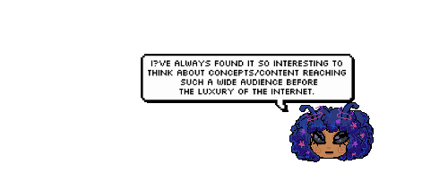
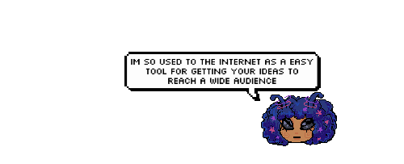
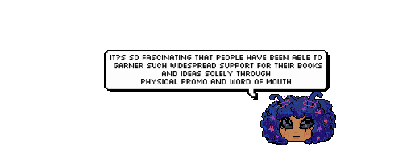
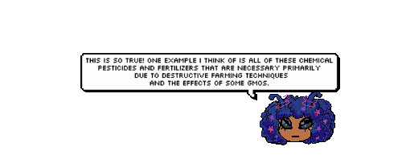
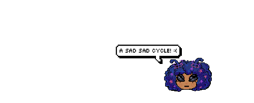

.gif) It seems we've landed!
It seems we've landed! It seems we've landed!

"In the same year that Limits to Growth was published, Stewart Brand’s Whole Earth Catalog (#1160) won a National Book Award and sold 1.5 million copies. Formatted like an encyclopedic sales catalog, Whole Earth’s 452 pages provided access to information about everything one might need to live off the grid. It was essentially a printed version of the not-yet-invented internet, linking all its subscribers via physical distribution."



"Fukuoka recognized that many of our celebrated technological advancements would be unnecessary had humans not created an ecological crisis in the first place."

"Once again, the grid caught up with those attempting to escape it, and what could have been a peer-maintained, communal space was inverted and twisted for profit."
<
"As it turns out, the cloud is more of a marketing buzzword than an accurate description of file storage. Though it may not be on your hard drive, all information must be saved physically somewhere on the network. “There is no cloud, it’s just someone else’s computer.” And that someone else is likely Amazon, Google, Facebook or Apple, whose data centers use real resources and take up acres of space around the globe."
"As we come to realize that even our digital growth has its limits, we’re once again faced with a choice: stay within the strictures of existing structures, or go off-grid and build our own."